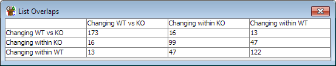

The probe list overlap matrix is a quick way to get a matrix of values for the number of probes which are in common between a large set of probe lists.

You can create a probe list overlap matrix by selecting "Plots > Probe List Overlap Matrix"